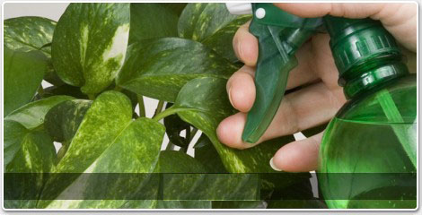
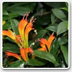
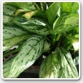
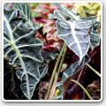
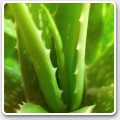
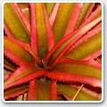

Plante de apartament
Este un fapt bine ştiut, că şi cea mai banală plantă poate transforma apartamentul într-un cămin primitor şi cald. Un colţ, o floare, o prezenţă verde te face să te cuprindă senzaţia de plăcut când intri pe uşă. Dacă tot fac parte din viaţa noastră de zi cu zi, de ce să nu învăţăm cum să le îngrijim? Cele mai simple trucuri le vor transforma în frumuseţile şi mândriile apatamentului nostru.

Aeschynanthus
Eschinantus Originare din regiunile tropicale şi subtropicale ale Asiei, Aeschynanthus sunt plante epifite, cu alte cuvinte nu cresc pe sol, ci agăţate pe copacii mari din pădure. Se caracterizează prin prezenţa a numeroase tulpini flexibile, lungi şi căţărătoare, cu frunze eliptice, de culoare verde închis, rigide şi cărnoase, situate la distanţă unele de altele.

Aglaonema
Originară din Sud-Estul Asiei, Aglaonema aparţine unei familii de o frumuseţe extraordinară; se cultivă pentru frunzele lor, adesea vărgate, şi pentru inflorescenţele văratice caracteristice, care prezintă bractee. Sunt plante uşor de cultivat, dar necesită căldură şi umiditate întregul an; se amplasează în plină lumină chiar dacă sunt capabile să suporte bine şi umbra. Cresc foarte lent.

Alocasia
Urechea elefantului Acest gen cuprinde aproximativ 70 de specii de plante originare din pădurile Asiei de Sud-Est. Sunt cultivate pentru frunzele lor mari, alungite - obovate, având în general formă de scut, cu nervaţiunea proeminentă, deseori prezentând "pistrui" coloraţi violet închis sau bronz. Forma şi dimensiunile frunzelor inspiră numele popular al acestor plante: "urechea elefantului".

Aloe
Aloe sunt splendide plante suculente, fiind predispuse la a înmagazina apa pentru a supravieţui de-a lungul perioadelor lungi de secetă. În regiunile cu climă caldă se pot aşeza în loc deschis, în timp ce în zonele reci trebuie să le cultivaţi în casă, eventual aşezând ghivecele în exlerior numai pe perioada veri. Multe dintre speciile cultivate sunt originare din Africa, Madagascar şi Arabia.

<< Pagina anterioara
Ananas
Ananasul este o plantă originară din Brazilia, renumită pentru fructele sale foarte gustoase, Ca plante de apartament se cultivă în general doar speciile şi varietăţile cele mal mici; cultivate în casă, plantele adulte produc numai fructe mici, cu valoare exclusiv ornamentală. Ananasul este constituit dintr-o rozetă amplă, cu frunze rigide şi arcuite; în centru se înalţă pedunculul floral care poartă o inflorescenţă roşie. Plantele adulte pot înflori cu uşurinţă în orice perioadă a anului.<< Pagina anterioara